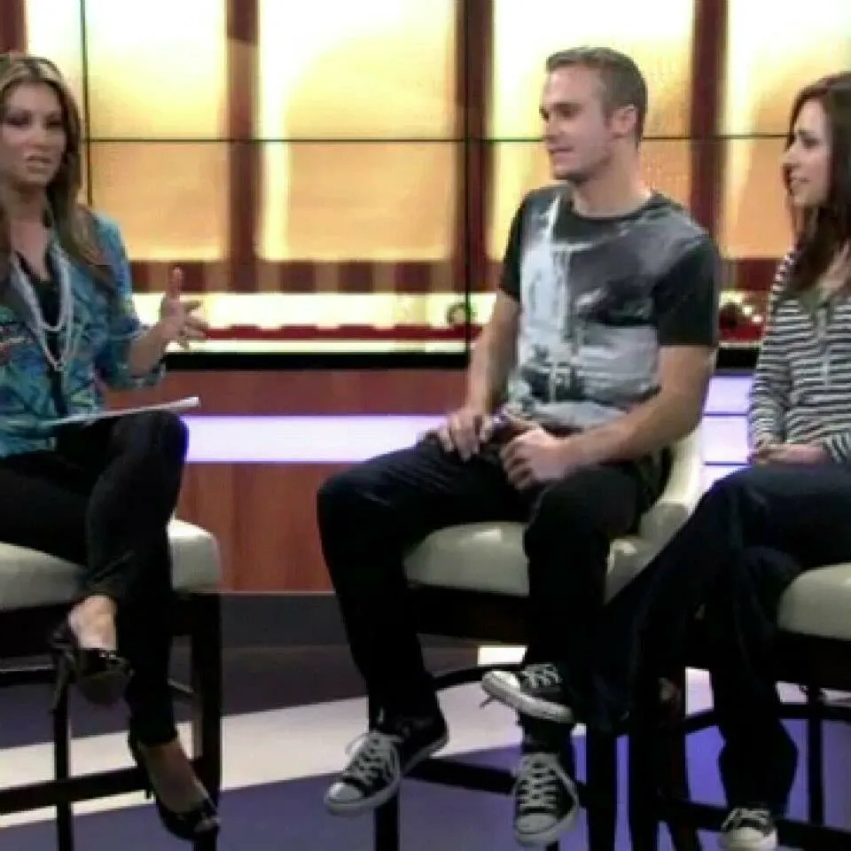
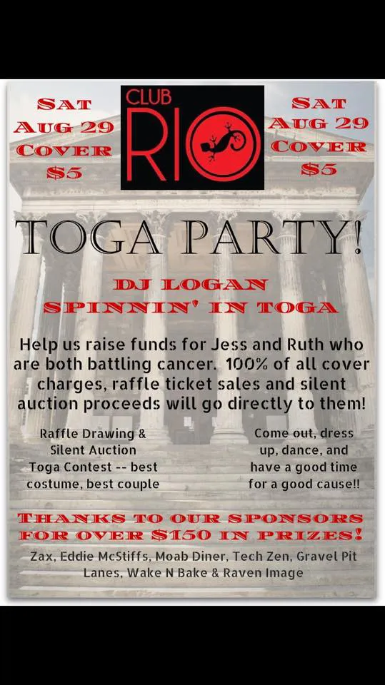
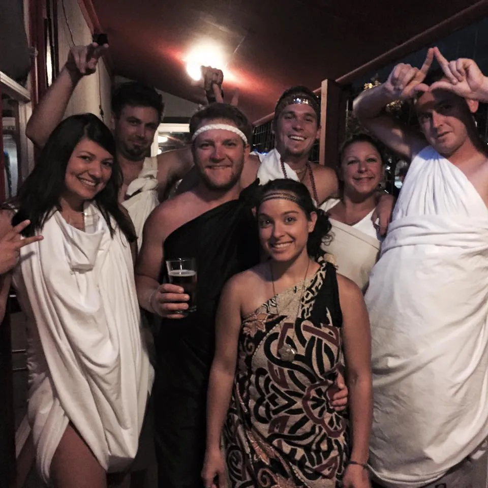
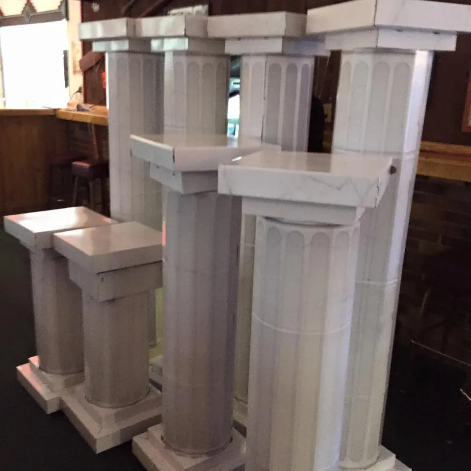
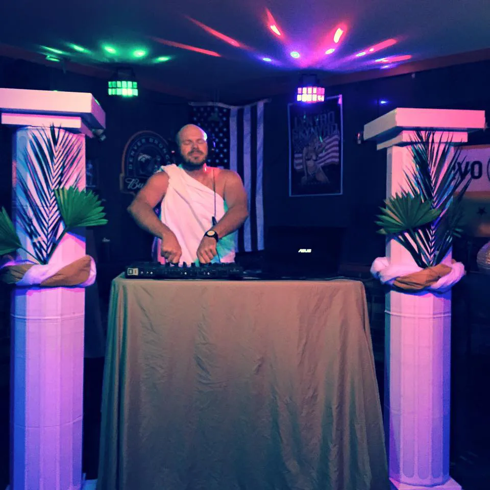
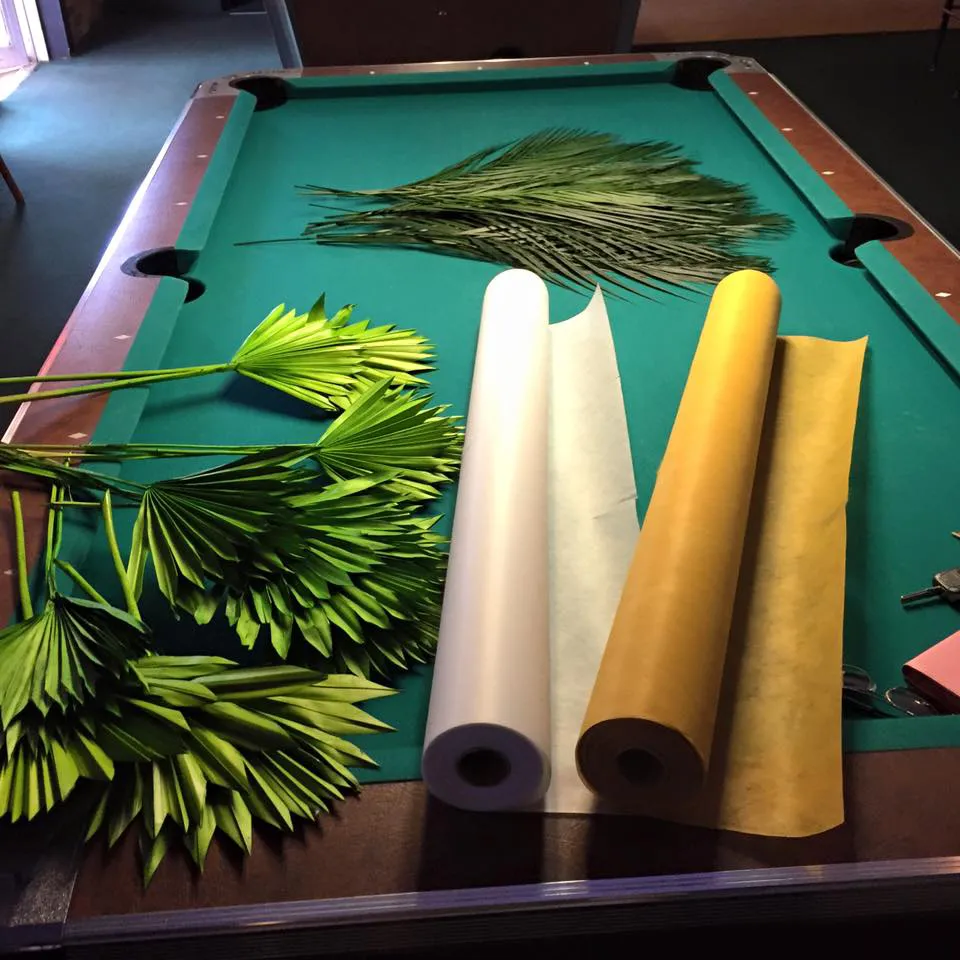
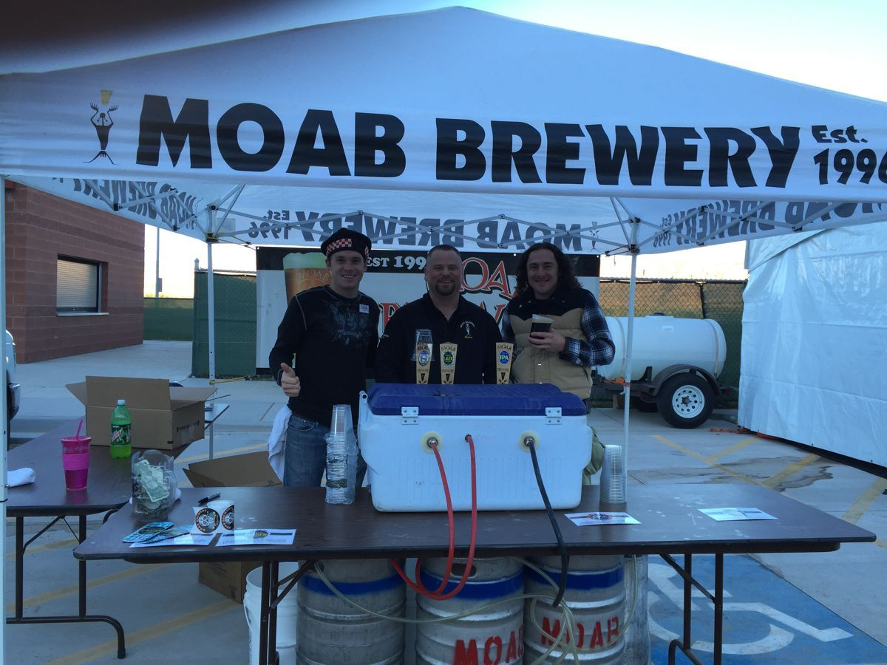

“Celebrating Sorrow”
Moab Times-Independent
Coverage of the Sorrow shoot on location in Moab.
Marketing strategist. Former film grip, concrete man, bartender. Founder of Dillys Trading CO. Minneapolis.
Today it's Dillys Trading CO, the AI-enhanced marketing consultancy I founded in 2020, and a Junior Analyst seat in Internet Service Testing. Before that, it was concrete forms on cliff-edge bedrock homes in Moab, Utah. Before that, it was a dolly track leveled on apple boxes in the sand dunes, waiting for Johnny Depp to walk past with a pink umbrella.
In 2013 I worked as a local-hire grip on The Lone Ranger (Disney / Jerry Bruckheimer), under key grip J. Michael Popovich's department on the Moab unit. I set track for the Depp-and-Hammer horse scene, held bounce boards in sync with the dolly, and rode the Colorado River sandbag run: roughly a thousand sandbags moved by jet boat to build a fake dune for the exploding train tracks sequence.
Two years earlier, I co-produced Sorrow (2015, dir. Millie Loredo). I scouted locations, ran logistics, and funded production myself through a merchandise campaign I designed and sold. In between, I spent two years at Straight Line Contracting pouring foundations.
Show up. Do the work nobody else wants. Get the details right.
Grip work is invisible when it's done right: the camera floats, the light holds, nobody thinks about why. I leveled dolly track on apple boxes in open sand for the pink umbrella scene, and matched bounce boards to a moving dolly so the close-ups stayed lit.
Then the river: a thousand sandbags run by jet boat down the Colorado to build a fake dune for the exploding train tracks sequence. You hand them off one at a time. There is no trick to it.
The second-story patio in a storm, on deadline, with minimal railing. Nobody else would touch it. I set the forms solo.
Straight Line Contracting, Moab, Utah, roughly 2010 to 2012. Form setter on million-dollar homes, municipal jobs, cliff-edge bedrock foundations, retaining walls, curb and gutter, and stained concrete. The Best Western patio above is the job I still measure others against.
“Celebrating Sorrow”
Coverage of the Sorrow shoot on location in Moab.

On-set interview alongside director Millie Loredo promoting Sorrow.

“Club Rio to host toga party Aug. 29.” Cancer fundraiser coverage.
August 29, 2015. Pitched and co-organized, with Crystal Alvarez, a benefit at Club Rio for Jessica Johnson and Ruth Velasquez, two Moab mothers battling cancer. I went door-to-door down Main Street by bicycle soliciting donations, secured thousands in silent auction items from Eddie McStiff's, Moab Brewery, Pagan Mountaineering, Tech Zen, Gravel Pit Lanes, and more, negotiated donated venue and decor, and built the Roman columns by hand out of cardboard.





Prompt systems, content engines, and campaign frameworks that pair LLM tooling with human strategy. Small business and digital product clients. Minneapolis, remote.
Visit dillystrading.co